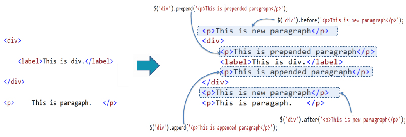

So, Html is the abbreviation of Hypertext Markup Language, and is a coding language that controls the content of a website. A non-technical way to describe this (as shown in the picture above) is like the skeleton of a body.
After we have the HTML content of the website we can start working with CSS (abbrev. of Cascading Style Sheets) and is a coding language that controls the look and formatting of a document. A non-technical way to describe this would be the DNA that carries all of the information of your physical characteristics.
And then, we have JS (abbrev. of JavaScript) that is a programming language used both on the client-side and server-side, that allows you to make web pages interactive. In the example above, JavaScript is the central nervous system and the muscles that gives everything movement and dynamic abilities.
In JavaScript the computer reads and executes statements from the start to the end of the script, unless there are some statements or instructions that change that flow (for example with a loop). Loops are used to repeatedly run a block of code until a certain condition is met.
A good example of a loop in real life could be a mobile device’s PIN. If you put the right password the first time the software will allow you to enter the device and use it, if not it will keep asking and block you after 3 attempts.
The DOM (abbrev. of Document Object Model) is an application programming interface (API). It defines the logical structure of the documents and how we interact with it. The DOM represents an entire website, and all web pages rely on the DOM to display and function properly.
Interacting with the DOM can be used to modify a website while it is open in a browser. This can be used to test visual styles and to play tricks on friends!
An array and an object are variables on JavaScript and they are both a form of data collection.
An array is an ordered list of values and stores the information as an index, starting from [0] and counting up to [1][2][3][4][5] etc..
Ex. of an array
const fruits= ["Orange", "Apple", "Pear"];
let x = fruits[0]; // x = "Orange"
An Object has properties and types and we can access the data with dot property like object.property; Square brackets like object['property'] and object destructuring { property } = object.
Ex. of and object
const fruits= {
name: “Apple”,
Color: “red”
};
// Dot property
accessor
fruits.name; // => Apple
A function is a collection of instructions that are executed by calling them. Functions are a great way to keep our code clean and efficient, as we may call that function plenty of times throughout our code.
Functions are useful because they make our code reusable, and allow us to organize statements together.